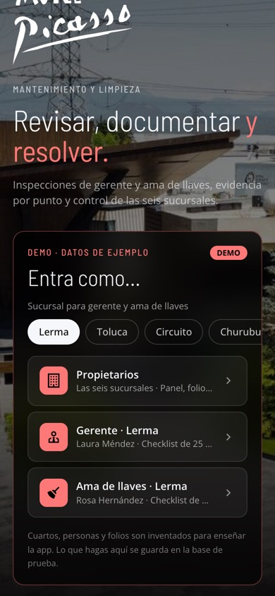
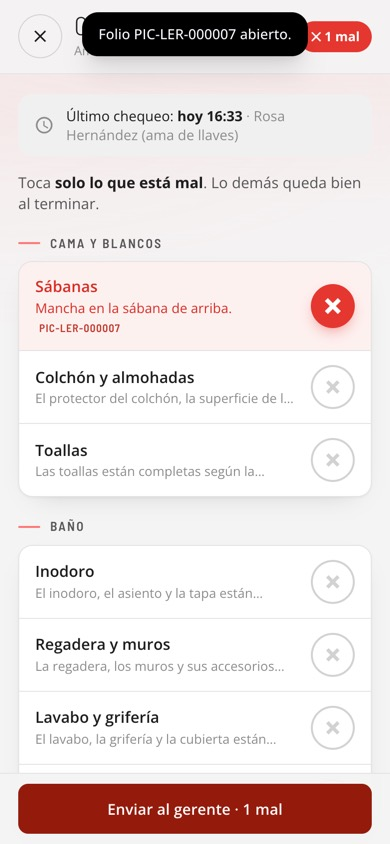
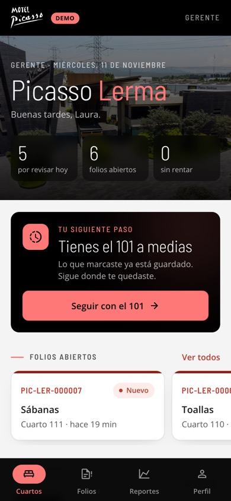
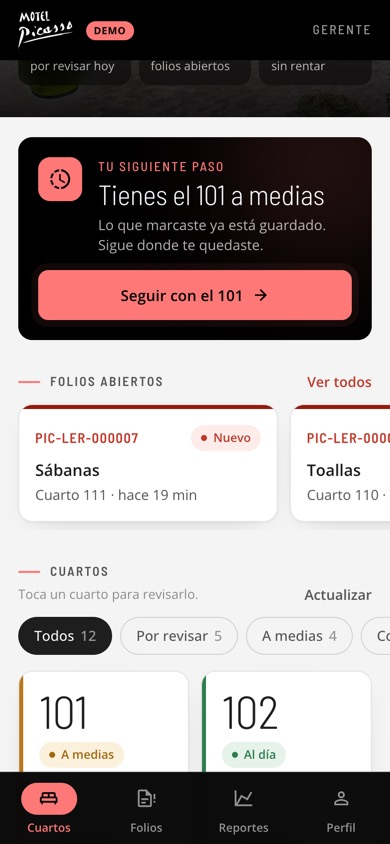
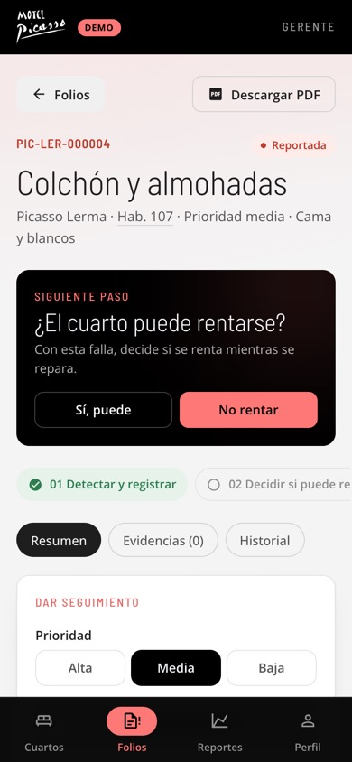
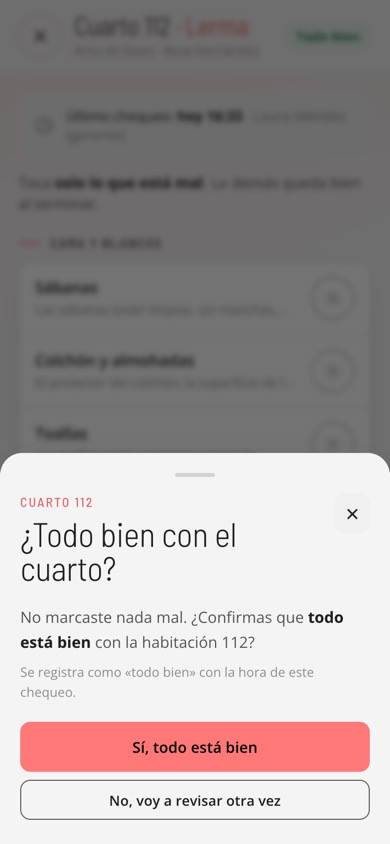
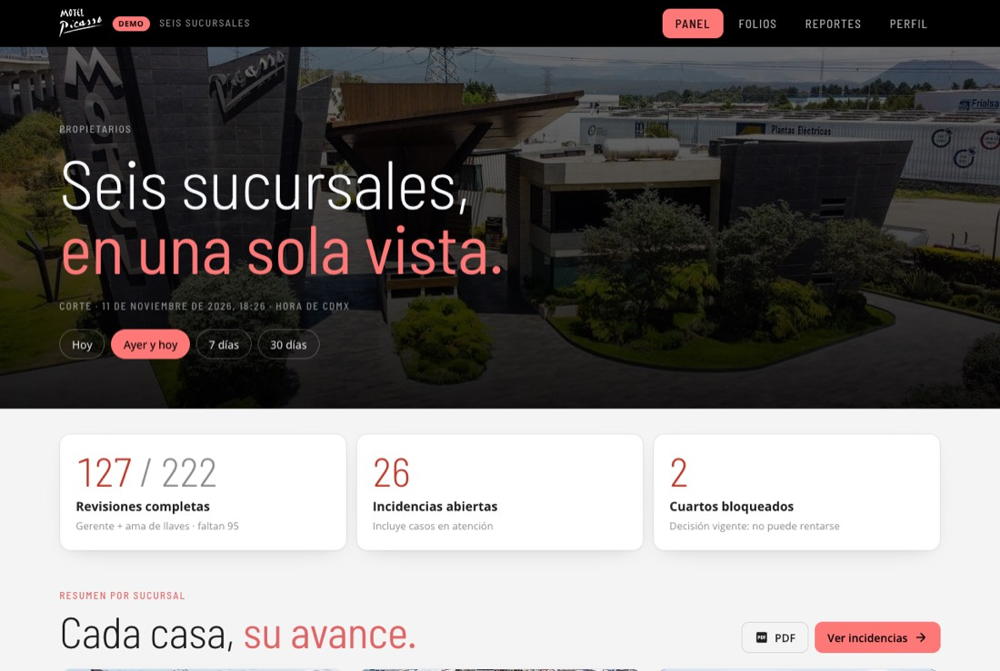
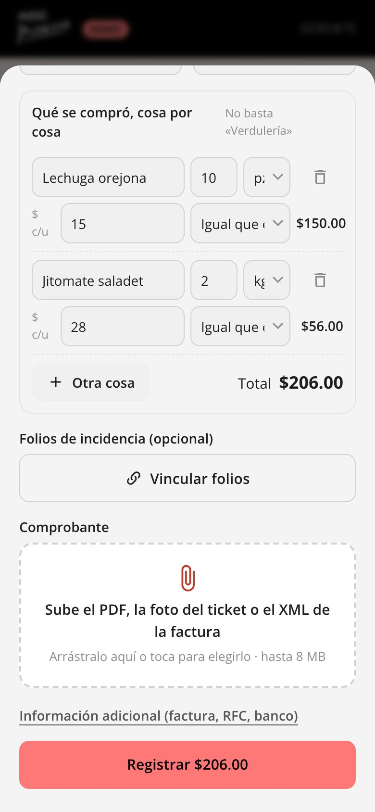
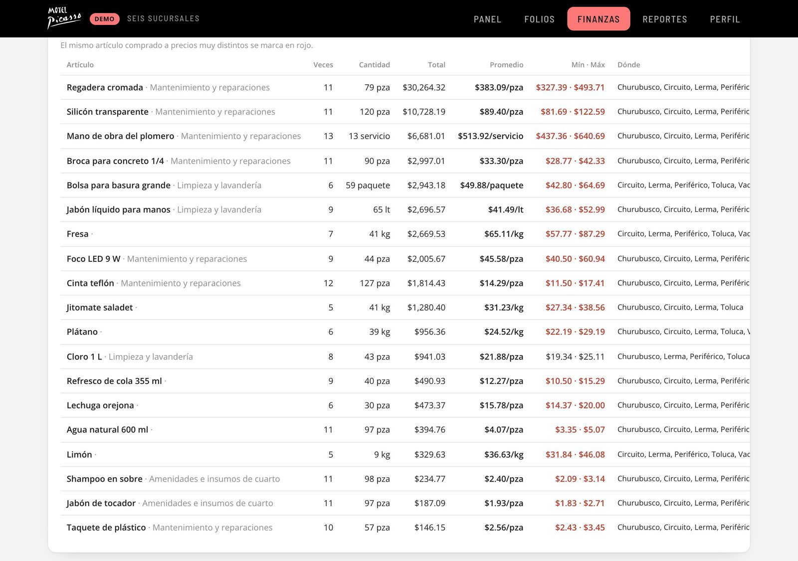

Resumen
Qué es
Una app para que el personal de las seis sucursales de Motel Picasso (Lerma, Toluca, Circuito, Churubusco, Periférico y Vaqueritos) revise cada cuarto desde el celular, documente lo que está mal con foto y le dé seguimiento hasta cerrarlo, y para que los propietarios vean las seis sucursales en un solo panel. Sigue el documento Reportes Mantenimiento y Limpieza Picasso (checklist de gerente de 25 puntos y de ama de llaves de 29).
Además, el módulo Finanzas junta lo que entra y lo que sale: los ingresos se leen cada noche del Kairos de cada motel y los gastos se capturan en Picasso artículo por artículo, se ligan a los folios de mantenimiento y se exportan a contabilidad con un archivo. Ver Finanzas.
Ama de llaves
Revisa el cuarto después de cada limpieza. Toca solo lo que está mal y lo envía al gerente.
Gerente
Revisa cada cuarto (diario o cada dos días), decide si se renta, atiende y cierra los folios. Registra los gastos de su sucursal.
Propietarios
Panel de las seis sucursales, folios con su expediente, indicadores, finanzas y reportes en PDF.
Administración
Cuartos, equipo de cada cuarto, personal y reglas por sucursal. Exporta los gastos a contabilidad.
Pila tecnológica
Piezas de uso común y gratuitas para este uso: no hay licencias que pagar por la plataforma. Las versiones son las que corren hoy.
App del personal


API


Datos e infraestructura


Calidad


Arquitectura
Cómo está diagramado
Un monolito modular: una sola API con tres módulos (sucursal, inspeccion y finanzas) que no se tocan por dentro, una base de datos, un Redis, un disco para fotos y un worker para trabajos en segundo plano, todo en contenedores de Docker. El navegador del teléfono instala la app (PWA) y habla con todo por una sola dirección HTTPS.
Modelo C4
El modelo C4 dibuja el sistema con zoom: contexto (quién lo usa y con qué habla), contenedores (las piezas que se despliegan), componentes (lo que hay dentro de la API) y código (los archivos de cada módulo, en «Módulos y código»).
Nivel 1 · Contexto
Nivel 2 · Contenedores
Servidor · Ubuntu 24.04 con Docker
/ la app · /api y /storage a la API · rutas internas cerradasNivel 3 · Componentes de la API
API Picasso · contenedor
public.py→accounts · usuarios y rolesstorage · fotos firmadascache · Redisqueue · trabajosmetrics · observability
Los PDF se arman en memoria con reportlab en un hilo aparte y se descargan; no se guardan. El tercer módulo, finanzas, usa sucursal e inspeccion solo por sus public.py; sus capas están en Finanzas.
Puertos
| Puerto | Servicio | Dónde |
|---|---|---|
| 443 / 80 | Caddy (app + /api + /storage) | Producción, lo único expuesto |
| 9800 | API Picasso | Interno |
| 9801 | PostgreSQL | Interno (en local publicado para herramientas) |
| 9803 | Redis | Interno (nunca publicado sin contraseña) |
| 9810 | Front en desarrollo (Vite) | Solo local |
| 9811 | Build de demo con /api por proxy (npm run movil) | Solo local / túnel de prueba |
Cómo viaja un toque
Lo que pasa cuando la ama de llaves marca «Regadera» como mal:
- En el teléfono. La PWA guarda el toque en una cola del teléfono (una por revisión) y lo manda a la API con su token.
- Service worker. No guarda en caché nada de
/apini de/storage: los datos siempre salen del servidor. - Caddy. Recibe por HTTPS, quita el
/apiy pasa la petición a la API dentro del servidor. - Permisos. La API revisa el token, el permiso del puesto (
revision:ama) y que el cuarto sea de su sucursal. Si no, responde 403. - Regla. El servicio aplica el documento: una falla abre un folio con consecutivo sin huecos (
PIC-LER-000245) o se liga al folio abierto del mismo punto. - Base. El repositorio escribe el punto, el folio y su historial en PostgreSQL en una sola transacción.
- Respuesta. La app quita el toque de la cola y pinta el tache rojo con su folio. Sin señal, lo reintenta sola al volver la conexión.
- Token vencido. Si pasaron más de 15 minutos, Axios renueva el token y repite la petición sin que la persona lo note.
Decisiones técnicas
| Decisión | Por qué | Lo que se descartó |
|---|---|---|
| PWA | Se instala desde el navegador, abre la cámara trasera, aguanta poca señal y se actualiza sin pasar por tiendas. | App de tienda. Si después se necesita tienda, cámara sin acceso a galería o avisos en iPhone sin instalar, el mismo front se envuelve con Capacitor sin reescribirlo. |
| Un solo servicio con módulos | Seis sucursales y decenas de usuarios no justifican varios servicios. Los contratos de JFast impiden que los módulos se mezclen. | Microservicios |
| PostgreSQL | Datos con relaciones (sucursal → cuarto → revisión → folio), transacciones y folios consecutivos sin huecos. | Base de documentos |
| Fotos privadas con ligas firmadas | Son evidencia interna. Una liga que se comparte deja de servir a las 2 horas. | Carpeta pública |
| PDF al momento | Siempre muestran el estado actual y no ocupan disco. | Guardar cada PDF generado |
| Copia de sucursal y cuarto en cada folio | El expediente dice lo que decía el día que se levantó, aunque después cambie el nombre o el número. | Leerlo siempre de la tabla actual |
Sin señal, fotos y reportes
Sin señal
Cada toque queda en la cola del teléfono y se sube solo al volver la conexión; la pantalla avisa cuántos faltan. Las fotos no entran a la cola: se toman con conexión.
Fotos
El teléfono las reduce a 1,600 px y JPEG al 80 % antes de subirlas (de 3–6 MB a unos cientos de KB). El servidor rechaza más de 8 MB y las guarda en el disco privado.
Service worker
Guarda la app (HTML, JS, estilos, logos) para abrir rápido. La navegación va primero a la red y, sin señal, usa la copia.
Reportes PDF
Cuatro tipos: revisión, folio, expediente de cuarto y grupo por periodo. Se arman al pedirlos, con la marca de Picasso.
Módulos y código
Dónde vive cada cosa
| Carpeta | Qué es |
|---|---|
picasso/ | API (servicio JFast). main.py monta los módulos; jfast.toml los plugins; migrations/ Alembic. |
picasso/modules/sucursal/ | Sucursales, cuartos (con jacuzzi, alberca, sauna, terraza), personal (nombre, puesto, sucursal) y catálogo de equipo por cuarto. |
picasso/modules/inspeccion/ | Revisiones y sus puntos, folios con historial y evidencias, decisión de renta, panel, indicadores, expediente de cuarto y PDF. |
…/inspeccion/models/catalogo_models.py | Los dos checklists del documento (G01–G25, A01–A29) y el texto de los puntos de equipo. |
…/inspeccion/validations/ | Reglas del documento como funciones puras (motivo de No aplica, folio, quién cierra, cumplimiento, conformidad). |
…/inspeccion/services/pdf/ | Los cuatro reportes PDF con la marca. |
picasso/modules/finanzas/ | Ingresos leídos de Kairos (resumen del día, tarifas y cada renta), gastos desglosados con comprobantes y folios ligados, auditoría, archivos para contabilidad y reporte PDF de finanzas. La tarea nocturna vive en tasks.py. |
picasso/scripts/ | sembrar.py, equipo_demo.py y gastos_demo.py: datos de ejemplo. No usar en producción. kairos_ahora.py: corre ya la lectura nocturna de Kairos. |
picasso-web/ | PWA: src/views (pantallas), src/components, src/services/picasso.js y finanzas.js (las llamadas a la API), public/sw.js (service worker) y public/marca/ (logo oficial). |
Módulo por módulo
Las mismas capas en los módulos de la API, de arriba (HTTP) a abajo (tablas); aquí sucursal e inspeccion, y finanzas en su sección. Una capa solo llama a la de abajo; jfast contracts check lo revisa en cada cambio.
api/HTTP, sin SQLroutes.py12 rutasroutes.pypdf_routes.py20 rutas + 4 PDFservices/reglas, sin FastAPISucursalServicepermisos por puesto, cuartos, equipo y personalRevisionServiceIncidenciaServiceReporteServicePdfServicecomun.pyy pdf/: revisión, folio, cuarto y gruporepositories/SQLSucursalRepositoryHabitacionRepositoryPersonalRepositoryEquipoRepositoryInspeccionRepositoryfolio consecutivo, últimos chequeos, rentas vigentesvalidations/funciones purasvalidar_asignacionpuesto ↔ sucursalinspeccion_validationNo aplica, folio, quién cierra, cumplimiento, conformidadmodels/entidades y esquemasSucursalHabitacionPersonalEquipoHabitacionEquipoRevisionResultadoPuntoIncidenciaEventoIncidenciaEvidenciaDecisionRentaConsecutivoFolioy el catálogo G01–G25 / A01–A29public.pylo único que ven otros módulosSucursalDTOHabitacionDTOEquipoDTOPerfilDTOsucursales(), habitaciones(), perfil_de(), equipos_por_habitacion()tasks.pytrabajos en segundo planotablasPostgreSQLsucursaleshabitacionespersonalequiposhabitacion_equiposrevisionesresultados_puntoincidenciaseventos_incidenciaevidenciasdecisiones_rentaconsecutivos_folio inspeccion → sucursal solo por public.py: guarda una copia de la clave de sucursal y el número de cuarto en cada revisión y folio, y nunca toca las tablas de sucursal.App del personal · picasso-web
router/rutasindex.jspide sesión; carga cada pantalla al abrirlalayouts/marcoMarco.vuebarra negra, navegación abajo en el celular, transicionesviews/12 pantallasLoginViewInicioViewTableroViewRevisionViewFoliosViewFolioViewHabitacionViewPanelViewReportesViewPerfilViewAdminViewFinanzasViewcomponents/23 piezasFilaMalHojaBotonFotoBotonPdfGaleriaVisorFotoEstadoChipNumeroBarraAvisosGastoHojaElegirFoliosGastosDelFolio…stores/Piniaauth.storesesión y tokenperfil.storenotification.storepuesto, sucursal y avisosservices/HTTPapi.jsAxios: token y renovación automáticapicasso.jsfinanzas.jslas llamadas a la APIlib/ y public/utilidadesformato.jsfotos.jsdemo.jssw.jsmanifest.webmanifestservice worker e instalaciónCapas de cada módulo
Cada módulo sigue la misma forma y jfast contracts check la vigila: api/ (HTTP, sin SQL) → services/ (reglas, sin FastAPI) → repositories/ (SQL) y validations/ (funciones puras). Otro módulo solo puede usar su public.py, que devuelve datos simples y nunca entidades. Por eso inspeccion guarda una copia de la clave y nombre de la sucursal y del número de cuarto en cada revisión y folio: el expediente dice lo que decía el día que se levantó.
Calidad
| Chequeo | Comando | Estado |
|---|---|---|
| Estilo | ruff check . && ruff format --check . | pasa |
| Tipos | mypy . (estricto) | pasa |
| Pruebas | pytest -q | 20 pasan |
| Contratos de módulos | jfast contracts check | sin violaciones |
| Front | vite build | compila |
Base de datos
Modelo de datos
PostgreSQL con 29 tablas: 20 del negocio (12 de sucursal e inspeccion, con la de folios consecutivos, y 8 de finanzas), 7 de cuentas que crea el plugin accounts, la de la cola de trabajos (jfast_jobs) y la de versiones de Alembic. Toda tabla del negocio trae tenant_id (vacío hoy: hay un solo cliente) y la mayoría created_at/updated_at. Horas en UTC; el día y la hora que ve la gente se calculan en hora de CDMX.
erDiagram
SUCURSALES ||--o{ HABITACIONES : tiene
SUCURSALES ||--o{ PERSONAL : "trabaja en"
HABITACIONES ||--o{ HABITACION_EQUIPOS : tiene
EQUIPOS ||--o{ HABITACION_EQUIPOS : "asignado a"
JFAST_USERS ||--o| PERSONAL : "cuenta de"
HABITACIONES ||..o{ REVISIONES : "por id"
REVISIONES ||--o{ RESULTADOS_PUNTO : contiene
RESULTADOS_PUNTO }o--o| INCIDENCIAS : "abre o se vincula"
INCIDENCIAS ||--o{ EVENTOS_INCIDENCIA : historial
INCIDENCIAS ||--o{ EVIDENCIAS : fotos
REVISIONES ||--o{ EVIDENCIAS : fotos
HABITACIONES ||..o{ DECISIONES_RENTA : "por id"
INCIDENCIAS ||--o{ DECISIONES_RENTA : motiva
SUCURSALES ||..|| CONSECUTIVOS_FOLIO : "por id"
Línea continua: llave foránea. Punteada: referencia por id entre módulos, sin llave foránea a propósito.
Diccionario
Módulo sucursal
| Tabla | Columnas | Notas |
|---|---|---|
sucursales | clave (3 letras, única), nombre, foto, frecuencia_gerente_dias, ama_exigible, permite_bien_en_bloque, activa | Las tres últimas reglas son interruptores por sucursal. |
habitaciones | sucursal_id→sucursales, numero, tiene_jacuzzi, tiene_alberca, tiene_sauna, tiene_terraza, activa | Único (sucursal, número). Sin la amenidad, su punto entra como No aplica. |
personal | user_id (único), nombre, rol, sucursal_id, activo | La cuenta y contraseña viven en jfast_users. |
equipos | nombre (único), categoria, activo | Catálogo: Netflix, sillón tántrico, minibar… Se edita en Ajustes. |
habitacion_equipos | habitacion_id, equipo_id | Llave compuesta; se borra en cascada. |
Módulo inspeccion
| Tabla | Columnas | Notas |
|---|---|---|
revisiones | sucursal_id, sucursal_clave, sucursal_nombre, habitacion_id, habitacion_numero, rol, responsable_id, responsable_nombre, estado (en_curso | completa), iniciada_en, completada_en | completada_en es la hora del chequeo. |
resultados_punto | revision_id, codigo (G01, A05, E03), orden, seccion, titulo, texto, resultado (bien | falla | no_aplica | sin_revisar), observacion, motivo_no_aplica, automatico, en_bloque, incidencia_id, revisado_en | Copia el texto del criterio. en_bloque = quedó bien al terminar sin tocarlo. |
incidencias | folio (único, PIC-LER-000245), copia de sucursal y cuarto, codigo_punto, categoria, titulo, descripcion, origen_rol, origen_revision_id, reporto_*, reportada_en, prioridad, estado, responsable_atencion, correccion, cerrada_por_nombre, cerrada_en | La descripción original nunca se edita. |
eventos_incidencia | incidencia_id, fecha, actor_*, accion, detalle | Solo se agrega: quién hizo qué y cuándo. |
evidencias | tipo (punto | avance | reparacion), archivo (llave en el disco), revision_id, codigo_punto, incidencia_id, subida_por_*, nota, creada_en | Las fotos se sirven con ligas firmadas de 2 horas. |
decisiones_renta | copia de sucursal y cuarto, puede_rentarse, motivo, gerente_*, incidencia_id, decidida_en | Cada decisión es un renglón; la vigente es la más reciente. |
consecutivos_folio | sucursal_id, ultimo | Un UPDATE atómico por folio: sin huecos ni repetidos. |
Módulo finanzas
Ocho tablas: fuentes_kairos, ingresos_dia, ingresos_tarifa y rentas (lo que se lee de Kairos), y gastos, gasto_partidas, gasto_incidencias y gasto_archivos (lo que se captura en Picasso). Columnas y notas en Finanzas → Tablas.
Cuentas (plugin accounts)
jfast_users, jfast_roles, jfast_role_permissions, jfast_user_roles, jfast_user_sessions, jfast_account_tokens, jfast_recovery_codes; además jfast_jobs (cola) y alembic_version. Las contraseñas se guardan con argon2.
Migraciones
| Revisión | Qué hace |
|---|---|
| 10a72d597e18 | Tablas iniciales |
| d142773af0b8 | Bien en bloque y su interruptor por sucursal |
| ca04ef335b92 | Equipo de cuarto y su catálogo inicial (17 cosas en 4 categorías) |
| d5a6fec8ae2d | Finanzas: fuentes de Kairos, ingresos por día, por tarifa y cada renta; gastos con partidas y comprobantes |
| 8166e118c343 | Un gasto ligado a varios folios de incidencia (gasto_incidencias) |
Roles y permisos
Quién puede hacer qué
El puesto viaja en el token de sesión; el servidor revisa además que la habitación o el folio sean de la sucursal de quien pregunta (si no, responde 403). Los permisos no viven solo en la pantalla.
| Acción | Ama de llaves | Gerente | Propietarios | Admin |
|---|---|---|---|---|
| Revisar cuartos (checklist) | su sucursal | su sucursal | no | no |
| Marcar lo que está mal y abrir folio | sí | sí | no | no |
| Decidir si el cuarto se renta | no | sí | no | no |
| Prioridad, responsable y avances del folio | no | sí | consulta | consulta |
| Cerrar folio (con foto y explicación) | no | sí | no | no |
| Ver folios | su sucursal | su sucursal | las seis | las seis |
| Panel, indicadores, expediente de cuarto | no | su sucursal | las seis | las seis |
| PDF de revisión | sí | sí | sí | sí |
| PDF de cuarto, folio y grupo | folio sí | su sucursal | sí | sí |
| Cuartos, equipo, personal y reglas | no | no | no | sí |
| Finanzas: ingresos, gastos, auditoría y su PDF | no | su sucursal | las seis | las seis |
| Registrar, corregir, ligar o anular un gasto | no | su sucursal | las seis | las seis |
| Exportar gastos a contabilidad (Excel y XML) | no | su sucursal | sí | sí |
| Volver a leer Kairos y ver o cambiar sus fuentes | no | no | sí | sí |
Reglas de negocio
Lo que el sistema hace cumplir
- Cuatro resultados por punto: Bien, Falla, No aplica, Sin revisar. Sin revisar nunca se presenta como Bien.
- No aplica pide motivo. Si el cuarto no tiene jacuzzi, alberca, sauna o terraza, el sistema marca esos puntos solo y escribe el motivo.
- Falla pide qué falla y abre un folio
PIC-<SUC>-000001, o se vincula al folio abierto de la misma falla en ese cuarto. - Solo lo que está mal: al terminar, lo que no se tocó queda Bien marcado «en bloque». Si no se marcó nada, la app pide confirmar «todo bien con el cuarto».
- La renta la decide el gerente, por separado del estado del folio. Cada decisión queda con motivo, fecha y nombre.
- Solo el gerente cierra un folio, con al menos una foto de la reparación tomada por un gerente y la explicación de la corrección. Si no es satisfactoria, sigue abierto.
- El historial solo se agrega. El reporte original, las evidencias, las fechas y quién hizo cada cambio se conservan.
- Revisión cerrada no se edita.
Interruptores (Ajustes → Cuartos, por sucursal)
| Interruptor | Opciones | Por qué es interruptor |
|---|---|---|
| Frecuencia de revisión del gerente | diaria · cada 2 días · cada 3 días | El documento dice «diaria o cada dos días». |
| Revisiones exigibles de ama de llaves | una por limpieza · una por cuarto al día | El documento no dice cómo contarlas. |
| Checklist | solo lo que está mal · cada punto ✓ o ✗ | El documento pide revisar punto por punto; la operación pidió rapidez. |
Indicadores
| Indicador | Definición |
|---|---|
| Cumplimiento de revisión | Completas / exigibles, por puesto. Gerente: una por cuarto por ventana de frecuencia. |
| Conformidad de puntos | Bien / (Bien + Falla). No aplica y Sin revisar aparte. |
| Tiempo de solución | De la apertura al cierre del folio; también la antigüedad del abierto más viejo. |
| Reincidencia | La misma categoría en el mismo cuarto dos o más veces en el periodo. |
Flujos
De la falla al cierre
sequenceDiagram actor Ama as Ama de llaves participant App as PWA participant API actor Ger as Gerente Ama->>App: Toca «Regadera» y escribe qué falla, toma foto App->>API: PUT punto A05 = falla (+ foto) API-->>App: Folio PIC-LER-000245 abierto Ama->>App: Enviar al gerente App->>API: resto-bien + completar Ger->>App: Abre el folio Ger->>API: Renta: no puede rentarse (motivo) Ger->>API: En atención con Mantenimiento Ger->>API: Foto de la reparación Ger->>API: Cerrar con la corrección Ger->>API: Renta: puede rentarse
stateDiagram-v2 [*] --> Reportada: Falla en un punto Reportada --> EnAtencion: el gerente pone quién atiende o anota avance Reportada --> Anulada: el punto se corrige en la misma revisión EnAtencion --> Cerrada: foto de reparación + explicación (solo gerente) Reportada --> Cerrada: foto de reparación + explicación (solo gerente) Cerrada --> [*] Anulada --> [*]
API
Rutas
JSON sobre HTTPS. Toda ruta pide Authorization: Bearer <token> salvo el inicio de sesión. Los errores siguen RFC 7807 con detail en español. En producción van bajo /api. La lista completa con esquemas está en /docs (OpenAPI) del servidor.
| Método | Ruta | Para qué |
|---|---|---|
| POST | /auth/login | Entrar con correo y contraseña (token de 15 min + renovación) |
| POST | /auth/refresh · /auth/logout | Renovar y cerrar sesión |
| GET | /perfil | Puesto, nombre y sucursal de quien entra |
| GET | /sucursales · /sucursales/{id}/habitaciones | Sucursales y cuartos (con su equipo) |
| PATCH | /sucursales/{id} · /habitaciones/{id} | Reglas de sucursal; amenidades o baja de cuarto (admin) |
| POST | /sucursales/{id}/habitaciones · /personal | Alta de cuarto y de persona con su cuenta (admin) |
| GET | /equipos | Catálogo de equipo |
| POST | /equipos · PATCH /equipos/{id} | Agregar, renombrar o desactivar (admin) |
| PUT | /habitaciones/{id}/equipos | Qué tiene el cuarto (admin) |
| GET | /tablero | Cuartos con estado, último chequeo, folios y renta |
| POST | /revisiones | Abrir (o retomar) la revisión de un cuarto |
| GET | /revisiones/{id} | Puntos, fotos, folios, renta y último chequeo |
| PUT | /revisiones/{id}/puntos/{codigo} | Resultado de un punto |
| POST | /revisiones/{id}/puntos/{codigo}/fotos | Foto de un punto (JPG, PNG o WebP, máx. 8 MB) |
| POST | /revisiones/{id}/resto-bien · /completar | Lo demás queda bien; cerrar con la hora |
| POST | /habitaciones/{id}/renta | Decisión de renta (gerente) |
| GET | /incidencias · /incidencias/{id} | Folios con filtros; expediente completo |
| PATCH | /incidencias/{id} | Prioridad, responsable, poner en atención (gerente) |
| POST | /incidencias/{id}/avances · /fotos · /cerrar | Avance, foto de reparación, cierre (gerente) |
| GET | /panel · /indicadores · /habitaciones/{id}/expediente | Propietarios y gerencia |
| GET | /reportes/revision/{id}.pdf · incidencia/{id}.pdf · habitacion/{id}.pdf · grupo.pdf?desde&hasta | Reportes en PDF |
| GET | /finanzas/… · /gastos/… | Ingresos, gastos, auditoría, exportación a contabilidad y reporte de finanzas: 20 rutas, detalle en Finanzas → Rutas |
| GET | /health · /ready | Salud del servicio (para el monitoreo) |
Finanzas
Lo que entra y lo que sale
El módulo finanzas junta los ingresos y los gastos de cada sucursal. Los ingresos no se capturan: se leen cada noche del Kairos de cada motel y se pisan con lo que diga Kairos. Los gastos sí se capturan en Picasso, cosa por cosa, con su comprobante, y pueden cargarse a uno o varios folios de mantenimiento. De ahí salen la auditoría para la contadora, el reporte PDF y los archivos para contabilidad.
Ingresos
Resumen del día, rentas por tarifa y cada renta (cuarto, forma de pago, importe), leídos de Kairos a las 04:30.
Gastos
Desglosados por artículo, cantidad, unidad y precio. El total es la suma. Con foto, PDF o XML de la factura.
Contabilidad
Excel con las columnas de la plantilla de movimientos del sistema contable y ZIP con los XML de las facturas.
Auditoría y PDF
Quién gasta más, en qué, precio de cada artículo con mínimo y máximo, y el reporte del periodo.
De Kairos a contabilidad
flowchart LR
subgraph Motel["Cada motel"]
K["Kairos
vista móvil"]
end
subgraph P["Picasso"]
W["Worker · 04:30
finanzas.importar_noche"]
I[("ingresos_dia
ingresos_tarifa · rentas")]
G["Gerente, admin o propietarios
registran el gasto"]
T[("gastos · partidas
folios · comprobantes")]
A["Pantalla Finanzas
ingresos contra gastos
auditoría · PDF"]
end
E["Contabilidad:
importar movimientos y CFDI"]
K -- "HTML de cada día, solo lectura" --> W
W --> I
G --> T
I --> A
T --> A
T -- "Excel de movimientos + ZIP de XML" --> E
Kairos y el sistema contable no se tocan entre sí: Picasso lee de uno y entrega archivos para el otro. Nada se escribe en Kairos ni se sube solo a contabilidad.
Capas del módulo
api/HTTP, sin SQLroutes.pyresumen, por día, por tarifa, fuentes, volver a leer, PDFroutes.pyalta, corrección, folios, comprobantes, anular, auditoría, exportarservices/reglas, sin FastAPIIngresosServiceImportadorKairosClienteKairoskairos_html.pyentrar, pedir cada día e interpretar su HTMLGastosServiceComprobantescontabilidad.pyreporte_pdf.pydesglose, archivos, Excel, ZIP y PDFrepositories/SQLFinanzasRepositorydías ya importados, sumas por sucursal, costo por folio, gastos pendientes de exportarvalidations/funciones purasrangoperiodo de hasta 400 días; 120 para volver a leerexigir_desglosesucursal_paraliga_de_incidencianormalizar_rfcpartidas genéricas, sucursal del gasto, RFC del SATmodels/entidades y esquemasFuenteKairosIngresoDiaIngresoTarifaRentaGastoGastoPartidaGastoIncidenciaGastoArchivotasks.pytrabajos en segundo planofinanzas.importar_nochecron 04:30 CDMXfinanzas.importara pedido finanzas → sucursal, inspeccion solo por public.py: de sucursal toma el puesto y la sucursal de quien pide; de inspeccion, el folio para ligarlo (guarda copia del código, título y cuarto). Del reporte de inspeccion reusa las piezas del PDF.Tablas
erDiagram
FUENTES_KAIROS ||..o{ INGRESOS_DIA : "por clave de sucursal"
INGRESOS_DIA ||..o{ INGRESOS_TARIFA : "mismo día"
INGRESOS_DIA ||..o{ RENTAS : "mismo día"
GASTOS ||--|{ GASTO_PARTIDAS : desglose
GASTOS ||--o{ GASTO_INCIDENCIAS : "cargado a"
GASTOS ||--o{ GASTO_ARCHIVOS : comprobantes
INCIDENCIAS ||..o{ GASTO_INCIDENCIAS : "por id"
Línea continua: llave foránea con borrado en cascada. Punteada: referencia por sucursal, fecha o id, sin llave foránea.
| Tabla | Columnas | Notas |
|---|---|---|
fuentes_kairos | sucursal_clave (única), nombre_kairos, url_base, activo, primer_dia, historial_desde, ultima_corrida, ultimo_ok, ultimo_error | Una por motel: de dónde se lee y cómo le fue la última vez. La dirección no se escribe en ningún otro lado. |
ingresos_dia | sucursal_id, fecha, habitaciones, rentas, extras, room_service, comandas, gastos_kairos, total, con_detalle, importado_en | Único (sucursal, fecha). con_detalle = falso en el historial viejo, que trae solo el resumen. |
ingresos_tarifa | sucursal_id, fecha, tarifa, cantidad, importe | Único (sucursal, fecha, tarifa): Motel Suite, Hotel Jacuzzi… |
rentas | sucursal_id, fecha, renglon, folio_kairos, habitacion_numero, forma_pago, importe, entrada | Cada renta del día. Único (sucursal, fecha, renglón). |
gastos | folio (GTO-LER-000080), copia de sucursal, fecha, categoria, concepto, proveedor, rfc_proveedor, forma_pago, tipo_operacion, banco, referencia, importe, nota, capturo_*, estado (registrado | anulado), exportado_en | importe es la suma de las partidas. exportado_en = la última vez que entró a un Excel para contabilidad. |
gasto_partidas | gasto_id, orden, descripcion, articulo, cantidad, unidad, precio_unitario, importe, categoria | articulo = la descripción en minúsculas y sin acentos, para agrupar el mismo artículo en la auditoría. |
gasto_incidencias | gasto_id, incidencia_id, folio, titulo, habitacion_numero | Un gasto puede ir a varios folios y un folio tener varios gastos. Único (gasto, folio). |
gasto_archivos | gasto_id, tipo (foto | pdf | xml), archivo, nombre, uuid_cfdi | En el disco privado, como las fotos. Del XML se lee el UUID del timbre al subirlo. |
La lectura nocturna de Kairos
Kairos es el sistema de recepción de cada motel. Corre en una PC del motel y no tiene API: Picasso entra como lo hace su vista móvil y pide lo mismo que pide esa pantalla. Solo lee; nunca llama a las acciones que escriben.
- 04:30 de CDMX. El worker corre
finanzas.importar_noche(programada entasks.py). - Credenciales. Usuario y contraseña salen solo del entorno (
PICASSO_KAIROS_USUARIO,PICASSO_KAIROS_CLAVE). Si faltan, anota el error en cada fuente y termina sin reintentar. - Últimos 3 días. Por cada fuente activa vuelve a leer los tres días anteriores a hoy, por si recepción corrigió algo, y los pisa con lo nuevo: resumen del día, rentas por tarifa y cada renta.
- Historial por tramos. Después rellena hacia atrás hasta
PICASSO_KAIROS_HISTORIAL_POR_NOCHEdías por noche (150). La primera vez pregunta a la gráfica de ventas qué días tuvieron rentas, para no pedir años vacíos día por día. Antes dePICASSO_KAIROS_DETALLE_DESDEguarda solo el resumen. - Un motel no detiene a los demás. Si un Kairos no responde, el error queda en su fuente (
ultimo_error) y se reintenta la noche siguiente. Entre petición y petición hay una pausa para no cargar el internet del motel. - A mano. Administración y propietarios pueden pedir «Volver a leer ayer» desde la pantalla (
POST /finanzas/importar, hasta 120 días). En el servidor,scripts/kairos_ahora.pyhace lo mismo que la tarea nocturna sin esperar.
Si Kairos cambia su pantalla, lo que se rompe está en services/kairos_html.py, que solo interpreta el HTML y tiene pruebas con ejemplos (tests/test_kairos.py). Las direcciones de cada Kairos viven en fuentes_kairos y se cambian con PATCH /finanzas/fuentes/{id}.
Reglas de los gastos
- Cosa por cosa. Cada gasto lleva al menos una partida con artículo, cantidad, unidad y precio unitario. El importe de cada partida lo calcula el servidor y el total del gasto es la suma.
- Nada genérico. Una partida que solo dice «Verdulería», «varios», «ferretería», «material» o parecido se rechaza con un ejemplo de cómo desglosarla.
- Sucursal. El gerente registra solo en la suya; administración y propietarios eligen la sucursal.
- Folios de la misma sucursal. Un gasto se carga a uno o varios folios de incidencia; un folio de otra sucursal se rechaza. Del folio se guarda copia del código, título y cuarto.
- Comprobante: foto (JPG, PNG o WebP), PDF o el XML de la factura, hasta 8 MB, en el disco privado.
- Fecha de pago no futura; RFC del proveedor opcional pero con formato del SAT.
- Anular, no borrar. Un gasto anulado ya no se cambia y sale de las sumas; queda en la base.
- Categoría del gasto y, si hace falta, una distinta por partida. Es de Picasso: el sistema contable no la tiene y viaja en la nota.
Exportación a contabilidad
En Finanzas → Gastos, «Exportar a contabilidad» baja un Excel con los gastos del periodo y filtros en pantalla, con los mismos títulos que la plantilla de movimientos del sistema contable (Cheques y transferencias → Importar). El botón de solo los que no se han exportado deja fuera los que ya entraron a un archivo antes, y «XML de facturas» baja un ZIP con los XML subidos, para importar los CFDI en contabilidad.
| Columna de la plantilla | De dónde sale |
|---|---|
| FORMA DE PAGO | Forma de pago del gasto, escrita como la lista del sistema contable (Transferencia, Cheque, Efectivo…) |
| BANCO | Banco, si se capturó |
| FECHA DE PAGO | Fecha del gasto |
| #FACTURA | Número de factura o referencia; si no hay, el folio del gasto (contabilidad lo exige) |
| TOTAL PAGADO | Total del gasto |
| TIPO DE CAMBIO | Vacío |
| BENEFICIARIO · RFC BENEFICIARIO | Proveedor y su RFC |
| TIPO DE OPERACIÓN | Gasto, Compra, Proveedores… como la lista del sistema contable |
| SUCURSAL ASIGNADA (RFC) | Vacío: se asigna en contabilidad |
| NOTA | Folio del gasto · sucursal · categoría · concepto · folios de incidencia · desglose (artículo, cantidad, unidad e importe) · nota |
El Excel trae una segunda hoja, «Catálogos», con las listas de forma de pago y tipo de operación del sistema contable, para quien lo corrija a mano. Al bajarlo, cada gasto queda marcado «Exportado».
Auditoría y reporte PDF
Quién gasta más
Por persona que capturó: sucursal, número de gastos, total y la categoría donde más gastó.
En qué se gasta
Por categoría: partidas, total y reparto por sucursal.
Precio por artículo
Veces, cantidad, total, promedio, mínimo y máximo por artículo y unidad. Si el máximo pasa 30 % el mínimo, va en rojo (▲ en el PDF).
«Imprimir reporte» (GET /finanzas/reporte.pdf?desde&hasta&sucursal_id) arma al momento un PDF con la marca: ingresos contra gastos por sucursal, la categoría más gastada, quién gasta más, el precio de cada artículo y el detalle de cada gasto con su desglose. Como los demás PDF, no se guarda.
Permisos
Finanzas es para gerencia, administración y propietarios; la ama de llaves no lo ve en el menú y la API le responde 403. El gerente solo ve y captura su sucursal. Volver a leer Kairos y las fuentes son solo de administración y propietarios. Detalle en Roles y permisos.
Rutas
| Método | Ruta | Para qué |
|---|---|---|
| GET | /finanzas/resumen | Ingresos contra gastos por sucursal en el periodo (por omisión, el mes hasta ayer) |
| GET | /finanzas/ingresos · /finanzas/tarifas | Ingresos por día; rentas e importe por tarifa |
| GET | /finanzas/reporte.pdf | Reporte de finanzas del periodo |
| GET | /finanzas/fuentes · PATCH /finanzas/fuentes/{id} | El Kairos de cada motel: estado, dirección, activar o pausar (admin y propietarios) |
| POST | /finanzas/importar | Encolar una lectura de Kairos de un rango (202; admin y propietarios) |
| GET | /gastos · /gastos/{id} | Gastos con filtros (sucursal, fechas, folio, sin folio, categoría, texto, anulados); un gasto |
| POST | /gastos · PATCH /gastos/{id} | Registrar; corregir (las partidas y los folios se reemplazan completos) |
| POST | /gastos/{id}/incidencias/{folio} · DELETE | Ligar o quitar un folio de incidencia |
| POST | /gastos/{id}/archivos · DELETE /gastos/{id}/archivos/{archivo} | Subir o quitar un comprobante |
| POST | /gastos/{id}/anular | Anular |
| GET | /gastos/costos-folios | Lo gastado en cada folio, para la lista de folios |
| GET | /gastos/analisis | Auditoría: por persona, por categoría y por artículo |
| POST | /gastos/exportar · /gastos/exportar-xml | Excel de movimientos y ZIP de XML para contabilidad (por ids o por periodo; solo_pendientes) |
Escalamiento
Arquitectura técnica y cómo crece
La regla es crecer por escalones y solo cuando una medición lo pida: cada escalón reusa lo anterior y ninguno obliga a reescribir. Hoy la carga es chica. Con 180 cuartos son unas 720 revisiones y 22 mil puntos guardados al día: menos de una petición por segundo en promedio. Un servidor de 2–4 vCPU sobra para eso.
La arquitectura técnica, en seis ideas
Monolito modular
Una sola API con módulos que no se tocan por dentro. Se despliega fácil y, si un día hace falta, un módulo se separa en su propio servicio sin reescribir los demás.
API sin estado
La sesión vive en el token firmado; lo revocado y los límites de intentos, en Redis. Por eso se pueden correr varias copias de la API detrás de Caddy.
Capas vigiladas
Rutas → servicios → repositorios, con reglas en funciones puras. jfast contracts check impide atajos entre capas y módulos.
PostgreSQL al centro
Transacciones, folios consecutivos y la cola de trabajos en la misma base: una pieza menos que operar.
Plugins intercambiables
Fotos en disco o S3, cola en PostgreSQL, Redis o RabbitMQ: se cambian por configuración en jfast.toml.
Medible
Métricas Prometheus en /metrics y trazas OpenTelemetry listas: se encienden con una variable cuando haya dónde mandarlas.
Escalones de carga
Un servidor con Docker: Caddy, API, worker, PostgreSQL y Redis.
Más vCPU y RAM. La API arranca un proceso por CPU (hasta 8) sin configurar nada.
Caddy reparte entre copias. Las fotos pasan a S3 (JFast ya trae el driver) porque un disco local no se comparte entre servidores.

PostgreSQL administrado con respaldos automáticos, índices para los reportes y más workers; la cola puede ir a Redis o RabbitMQ.
Otros clientes (otros moteles u hoteles)
Hay dos caminos y conviene empezar por el primero.
| Camino | Cómo funciona | Cuándo |
|---|---|---|
| Una instalación por cliente | La misma imagen con su propio servidor, base, dominio y respaldos. Aislamiento total y cero riesgo de mezclar datos. | Listo hoy. Para los primeros 2–5 clientes. |
| Multiempresa en una sola instalación | Todas las tablas del negocio ya traen tenant_id y los tokens ya tienen su campo. JFast trae jfast tenancy enable y un chequeo de preparación; hoy marca 32 puntos por corregir (23 en la app, 9 en los scripts de demo). Después, seguridad por renglón en PostgreSQL y fotos separadas por cliente en S3. | Cuando se venda como servicio a muchos clientes. |
Lo que sería distinto por cliente: los checklists de Picasso (G01–G25, A01–A29) hoy están en el código; para otro cliente habría que pasarlos a la base y editarlos desde Ajustes. Logo y colores de la app irían por cliente en la misma PWA.
Apps para los clientes del motel
Por ejemplo el QR de quejas y sugerencias que ya pide el checklist, o el estado de una reserva. Entrarían así, sin tocar la app del personal:
API Picasso
public.py- Primero como módulo dentro de la misma API: comparte cuentas, fotos, colas y respaldos.
- Permisos separados: el huésped no recibe ningún permiso del personal; sus rutas tienen su propio límite de intentos.
- Se separa en su propio servicio solo si su tráfico es mucho mayor que el del personal o necesita otro ritmo de despliegue. Como solo habla por
public.pyy HTTP, se mueve sin reescribir el resto.
Cuándo separar en servicios
| Señal | Qué se hace |
|---|---|
| Un módulo necesita escalar 10× más que el resto | Se saca a su propio contenedor con la misma imagen y solo ese módulo encendido. |
| Equipos distintos despliegan a ritmos distintos | Servicio aparte por equipo, con su repositorio y su base. |
| Un trabajo pesado frena las respuestas | Se pasa a tasks.py y lo corre el worker, no la petición. |
| Ninguna de las anteriores | Se queda en el monolito: es más barato de operar y de cambiar. |
Requerimientos de servidor
Qué servidor necesita
Mínimo
2 vCPU
4 GB RAM · 40 GB SSD · Ubuntu 24.04 LTS · Docker
Recomendado
2–4 vCPU
8 GB RAM · 80 GB SSD · respaldo diario fuera del servidor
Red
HTTPS
Dominio propio (p. ej. inspecciones.motelpicasso.mx) y certificado. Solo 80 y 443 abiertos.
Cuánto va a crecer
No sabemos cuántos cuartos tiene cada sucursal: la estimación usa 30 por sucursal y hay que rehacerla con la cifra real.
| Supuesto | Valor |
|---|---|
| Cuartos | 6 sucursales × 30 = 180 |
| Revisiones al día | 3 de ama + 1 de gerente por cuarto ≈ 720 |
| Puntos guardados al día | ≈ 720 × 30 ≈ 21,600 renglones |
| Fotos al día | 5 % de revisiones con falla × 1.5 fotos ≈ 55 fotos de ~300 KB ≈ 16 MB |
| Base de datos | ≈ 0.3 GB al mes (≈ 4 GB al año, con índices) |
| Fotos | ≈ 0.5 GB al mes (≈ 6 GB al año) |
| Concurrencia | Decenas de personas a la vez; cada toque es una petición corta. Holgado para 2 vCPU. |
Con 80 GB caben unos 7 años de datos y fotos. En la demo local, 145 revisiones con 3,971 puntos ocupan 10 MB de base y 36 fotos 1.1 MB.
Software
| Componente | Imagen / versión | Notas |
|---|---|---|
| API | python:3.12-slim (Dockerfile del proyecto) | Un worker por CPU (hasta 8); healthcheck en /health. |
| Trabajos en segundo plano | misma imagen, jfast worker | Con el programador encendido (scheduler = true): corre la lectura de Kairos a las 04:30 de CDMX. Queda listo para avisos. |
| PostgreSQL | pgvector/pgvector:pg16 | Volumen persistente; shm_size: 1gb. |
| Redis | redis:7-alpine, --appendonly yes | Con contraseña y sin publicar el puerto. |
| Caddy | caddy:2-alpine con Caddyfile.prod | HTTPS automático, sirve el build de la PWA y manda /api y /storage a la API. |
| Build del front | Node 22 (solo para compilar) | npm ci && npm run build → picasso-web/dist. |
Variables de entorno
Configuración y secretos
Los valores viven en los .env del servidor (el de la raíz para compose y picasso/.env para la API) y nunca en git. Aquí solo los nombres; .env.produccion.ejemplo trae los de compose.
| Variable | Dónde | Para qué |
|---|---|---|
JFAST_ENV | API | prod en el servidor |
JFAST_DB_DSN | API | Conexión a PostgreSQL |
JFAST_CACHE_URL | API | Conexión a Redis (con contraseña) |
JFAST_AUTH_SECRET | API | Firma de los tokens (32 bytes aleatorios) |
JFAST_STORAGE_SIGNING_KEY | API | Firma de las ligas de fotos (32 bytes aleatorios) |
JFAST_ACCOUNTS_BOOTSTRAP_ADMIN_PASSWORD | API | Solo el primer arranque: crea admin@…. Quitarla después. |
JFAST_CORS_ORIGINS | API | Solo si front y API van en dominios distintos |
PICASSO_DATABASE_PASSWORD | compose | Contraseña del usuario de Postgres |
PICASSO_REDIS_PASSWORD | compose (producción) | Contraseña de Redis; va dentro de la URL de conexión, por eso solo letras y números |
PICASSO_DOMINIO | compose (producción) | Dominio de la app; Caddy saca su certificado HTTPS |
COMPOSE_FILE | compose (producción) | docker-compose.yml:docker-compose.prod.yml, para no escribir -f en cada comando |
PICASSO_KAIROS_USUARIO, PICASSO_KAIROS_CLAVE | API y worker | Cuenta de lectura de Kairos, la misma en los seis moteles. Solo en picasso/.env; sin ellas la tarea nocturna anota el error en cada fuente y no lee nada. |
PICASSO_KAIROS_HISTORIAL_POR_NOCHE | worker | Días del historial que se traen por noche y por motel (150 si no se pone). |
PICASSO_KAIROS_DETALLE_DESDE | worker | Desde qué fecha el historial trae tarifas y cada renta; antes, solo el resumen del día (2025-01-01 si no se pone). |
VITE_API_URL | front (al compilar) | /api en producción |
VITE_DEMO, VITE_DEMO_CLAVE | front (al compilar) | Solo demo. Muestran los accesos de un toque; nunca en producción. |
Despliegue
Paso a paso
Producción usa dos archivos encima de los de desarrollo, que genera jfast y no se editan a mano: docker-compose.prod.yml y Caddyfile.prod. Las variables vienen en .env.produccion.ejemplo.
- Subir el proyecto a un repositorio git privado (hoy no está en git).
- Crear el servidor (Ubuntu 24.04 con Docker), apuntar el dominio al servidor y abrir solo 80 y 443.
- Copiar
.env.produccion.ejemplocomo.envy llenarlo: dominio y contraseñas nuevas de Postgres y Redis (openssl rand -hex 32). Ese.envtraeCOMPOSE_FILE, así quedocker composeya usa los dos archivos. - Poner en
picasso/.envsecretos nuevos:JFAST_AUTH_SECRET,JFAST_STORAGE_SIGNING_KEYy, solo para el primer arranque,JFAST_ACCOUNTS_BOOTSTRAP_ADMIN_PASSWORD. Nunca los de la demo. - Compilar la PWA sin modo demo:
cd picasso-web && npm ci && npm run build(usa.env.production:VITE_API_URL=/apiy sin modo demo). - Levantar:
docker compose up -d --build. La API corre las migraciones sola al arrancar y Caddy saca el certificado HTTPS del dominio. - Entrar como
admin@…, dar de alta los cuartos reales con su equipo y al personal real. No corrersembrar.pyniequipo_demo.py. - Quitar
JFAST_ACCOUNTS_BOOTSTRAP_ADMIN_PASSWORDdepicasso/.envy reiniciar. - Programar respaldos y monitoreo; correr la lista de QA completa.
Cada cambio de código: compilar el front y docker compose up -d --build. Las migraciones corren solas al arrancar la API y el service worker toma la versión nueva al recargar.
Qué cambia en producción
| Pieza | Desarrollo | Producción |
|---|---|---|
| Puertos | Postgres 9801, Redis 9803 y API 9800 publicados | Solo 80 y 443 de Caddy. Docker abre los puertos publicados aunque el firewall diga que no. |
| Redis | Sin contraseña | Con contraseña (PICASSO_REDIS_PASSWORD) |
| Fotos | Dentro del contenedor | Volumen picasso_storage en /app/storage; sobreviven a reconstruir |
| Caddy | HTTP en localhost, sin /storage | HTTPS automático para el dominio, /storage a la API, rutas internas cerradas, certificados en volumen |
| API | JFAST_ENV=dev | JFAST_ENV=prod: apaga /docs, /openapi.json, /info y /queue/stats |
Cómo se probó
docker compose configcon los dos archivos: sin puertos salvo 80/443, Redis con contraseña y volumen de fotos en la API y el worker. Sin dominio o sin contraseña de Redis no arranca y dice cuál falta.caddy validatecon Caddy 2.11: configuración válida.- Ese mismo Caddyfile, en un contenedor contra la API local:
/api/docs,/api/openapi.json,/api/info,/api/metricsy/api/queue/statsdan 404; la app abre en cualquier ruta; entrar y bajar PDF funciona; una foto abre con su liga firmada y da 403 con la firma alterada o sin firma. - La API con
JFAST_ENV=prodarranca y responde/ready.
Operación
Operación y mantenimiento
Tareas de todos los días una vez en el servidor. Los comandos se corren en la carpeta del proyecto, con el .env de producción (su COMPOSE_FILE hace que docker compose use los dos archivos).
Desde la app (administración)
| Tarea | Dónde |
|---|---|
| Alta de una persona | Ajustes → Personal: nombre, correo, contraseña inicial (10 caracteres o más), puesto y sucursal. La contraseña se entrega en persona. |
| Alta o baja de un cuarto | Ajustes → Cuartos: número, amenidades y botón Baja/Activar. Lo revisado se conserva. |
| Equipo de un cuarto | Ajustes → Cuartos → Equipo. Entra a la siguiente revisión de ese cuarto. |
| Reglas de una sucursal | Ajustes → Cuartos, arriba: frecuencia del gerente, cómo contar a la ama y tipo de checklist. |
| Volver a leer ingresos | Finanzas → Ingresos → «Volver a leer ayer de Kairos». Encola la lectura; se ve al terminar. |
| Pasar gastos a contabilidad | Finanzas → Gastos → «Exportar a contabilidad» (Excel) y «XML de facturas» (ZIP). |
En el servidor
| Tarea | Comando |
|---|---|
| ¿Está viva? | curl -fsS https://<dominio>/api/ready |
| Ver registros | docker compose logs -f --tail=200 picasso |
| Reiniciar la API | docker compose restart picasso picasso-worker |
| Respaldar la base | docker compose exec -T picasso-database pg_dump -U app -Fc app > picasso-$(date +%F).dump |
| Restaurar la base | docker compose exec -T picasso-database pg_restore -U app -d app --clean < archivo.dump |
| Leer Kairos ya, sin esperar a las 04:30 | docker compose exec -e PYTHONPATH=/app picasso python scripts/kairos_ahora.py (con --vueltas N avanza N tramos del historial) |
| ¿Kairos se leyó anoche? | Finanzas → Ingresos, columna «Kairos» (hora de la última lectura o «Sin leer» con el error), o docker compose logs picasso-worker | grep Kairos |
| Respaldar las fotos | Copiar el volumen de /app/storage fuera del servidor cada noche (por ejemplo con rsync o a S3). |
| Versión nueva | Bajar el código, npm ci && npm run build en picasso-web y docker compose up -d --build. Las migraciones corren solas al arrancar. |
Respaldos y monitoreo
Base
pg_dump diario comprimido, 30 días de historial y copia fuera del servidor (otro proveedor o S3).
Fotos
Copiar el volumen de fotos a almacenamiento externo cada noche. Sin fotos, los folios pierden su evidencia.
Monitoreo
Revisar /ready cada minuto, métricas de /metrics solo desde la red interna y alerta de disco al 80 %.
Memoria
Con swap o con la caché de Postgres limitada: sin swap, el kernel mata procesos al llenarse la RAM.
Qué vigilar
Cada minuto
/api/ready responde 200. Si no, revisar registros y reiniciar.
Cada día
Que el respaldo de la noche exista y pese parecido al anterior.
Cada semana
Disco por debajo del 80 % y errores 500 en los registros.
Cada mes
Restaurar un respaldo en un servidor de prueba y actualizar el sistema operativo.
Cambiar secretos: un JFAST_AUTH_SECRET nuevo cierra todas las sesiones (todos vuelven a entrar). Un JFAST_STORAGE_SIGNING_KEY nuevo invalida las ligas de fotos ya entregadas; la app pide ligas nuevas al recargar.
Seguridad
Qué está cubierto y qué falta
Cubierto, por capa
Acceso
Contraseñas con argon2. La cuenta se bloquea 15 minutos tras 5 intentos fallidos, y hay límite de intentos por dirección y por cuenta.
Sesión
Tokens de 15 minutos con renovación rotativa: si alguien reusa un token viejo se cierra toda la sesión. Cerrar sesión los revoca.
Permisos
Por puesto y por sucursal, revisados en el servidor (403), no solo escondidos en la pantalla.
Fotos
Disco privado con ligas firmadas que caducan a las 2 horas. Se valida tipo y tamaño (máx. 8 MB) y la llave del archivo no admite rutas. Los comprobantes de gastos van igual.
Historial
El historial de cada folio solo se agrega y la descripción original no se edita: queda quién hizo qué y cuándo.
Transporte
En producción todo va por HTTPS con certificado automático de Caddy; la base, Redis y la API no publican puertos y las rutas internas (/docs, /metrics…) quedan cerradas.
Pendiente antes de producción
- Levantar con
docker-compose.prod.ymlyCaddyfile.prod(puertos cerrados, Redis con contraseña, rutas internas cerradas); en desarrollo nada de eso aplica. - Compilar el front sin
VITE_DEMO: el modo demo mete la contraseña de las cuentas de ejemplo en el JS. - Secretos nuevos para el servidor; nunca reusar los de la demo.
- Recuperación de contraseña por correo (hoy la da la administración) y, si se quiere, segundo factor para administración.
- Respaldos probados (restaurar uno de prueba).
Guía de usuario
Cómo se usa, por puesto
Entrar e instalar
- Abre la dirección de la app en el navegador del celular.
- Escribe tu correo y contraseña (te los da la administración). En la demo hay botones «Entra como…».
- Instálala: en iPhone, Safari → Compartir → «Agregar a inicio»; en Android, Chrome → ⋮ → «Instalar app». Abre como una app, sin barra del navegador.
- En Perfil eliges tema claro u oscuro y cierras sesión.

Ama de llaves
- En Cuartos ves los de tu sucursal con su estado y la hora del último chequeo.
- Al terminar de limpiar, toca el cuarto y «Revisar el cuarto».
- Toca solo lo que está mal: escribe qué pasa y toma la foto. Queda con un tache rojo y se abre un folio.
- Si algo no aplica en ese cuarto, tócalo y elige «Este punto no aplica».
- Toca «Enviar al gerente». Si no marcaste nada, la app te pregunta si confirmas que todo está bien.
- Si te quedas sin señal, sigue: lo marcado se sube solo al volver la conexión.

Gerente
- Arriba, «Tu siguiente paso» te dice qué toca: cuartos que envió la ama, folios nuevos o cuartos por revisar hoy.
- Revisa cada cuarto igual que la ama, con tu checklist de 25 puntos y el equipo del cuarto.
- Al terminar, decide si el cuarto puede rentarse y escribe el motivo.
- En cada folio: define prioridad, pon quién lo atiende y anota avances.
- Cuando quede reparado, compruébalo y toma la foto de la reparación.
- «Actualizar y cerrar» con lo que se corrigió, y confirma la renta.




Propietarios
- El Panel muestra las seis sucursales: revisiones completas contra exigibles, folios abiertos, cuartos sin rentar y último chequeo. Cambia el periodo arriba (hoy, ayer y hoy, 7 o 30 días).
- Toca una sucursal para ver sus folios abiertos; en Folios filtras por estado, sucursal, fecha o texto.
- Cada folio abre su expediente: reporte original, renta, atención, fotos e historial.
- En Reportes ves cumplimiento, conformidad, tiempo de solución, reincidencias y fallas frecuentes, y descargas el PDF del periodo.

Administración
- Ajustes → Cuartos: elige la sucursal, da de alta cuartos y marca jacuzzi, alberca, sauna o terraza.
- Botón «Equipo» de cada cuarto: toca lo que tiene (Netflix, sillón tántrico, minibar…). Entra a su checklist.
- Catálogo de equipo: agrega cosas nuevas, renómbralas o desactívalas.
- Arriba de los cuartos, las reglas de la sucursal: frecuencia del gerente, cómo contar a la ama y tipo de checklist.
- Personal: da de alta a cada persona con su puesto y sucursal; entrega la contraseña en persona.

Finanzas (gerente, propietarios y administración)
- Finanzas → Gastos → «Registrar gasto»: fecha de pago, forma de pago, para qué fue, categoría y proveedor.
- En «Qué se compró, cosa por cosa», un renglón por artículo con cantidad, unidad y precio. El total se suma solo; «Verdulería» o «varios» no se aceptan.
- «Vincular folios» marca los folios de incidencia a los que se carga el gasto. También se registra o se liga desde el folio, en «Gastos del folio».
- Sube el comprobante: foto del ticket, PDF o XML de la factura.
- Administración y propietarios ven Ingresos (se llenan cada noche desde Kairos), usan Auditoría, bajan el Excel con «Exportar a contabilidad» y el PDF con «Imprimir reporte».


Listas de QA
Pruebas antes de liberar
Marca cada caso como Pasa o Falla (toca el botón para cambiarlo). Tu avance se guarda solo en este navegador; «Copiar resultados» lo deja listo para pegar en un chat o correo.
Marca una casilla por caso y anota lo que veas. Los casos con Falla se reportan con su número (por ejemplo QA‑24) y la nota.
Pendientes
Lo que falta y riesgos conocidos
Siguientes pasos sugeridos
Propuesta de CometaX Company. Las fechas se acuerdan con la dirección.
docker-compose.prod.yml, secretos nuevos, app compilada sin modo demo y respaldos programados.Pendientes y riesgos conocidos
| Tema | Detalle |
|---|---|
| Datos reales | Cuartos, equipo y personal reales por sucursal; borrar los de ejemplo. |
| Servidor y dominio | Desplegar con HTTPS; hoy solo hay un túnel temporal que depende de la Mac. |
| Repositorio | El código no está en git. |
| Producción sin estrenar | docker-compose.prod.yml y Caddyfile.prod están validados y probados en local, pero falta levantarlos en el servidor real (certificado HTTPS y Redis con contraseña). |
| Reglas por confirmar | Frecuencia del gerente, exigibles de ama y checklist «solo lo que está mal» con la dirección. |
| Avisos | Notificar al gerente cuando la ama envía con fallas (la cola de trabajos ya está). |
| Fotos sin señal | Los puntos sí se encolan sin señal; las fotos no: hay que tomarlas de nuevo con conexión. |
| Equipo nuevo | Una revisión ya abierta no recibe el equipo agregado después; lo toma la siguiente. |
| Seguridad | Ver la lista «Pendiente antes de producción». |
| Kairos sin credenciales | El servidor de prueba no tiene PICASSO_KAIROS_USUARIO ni PICASSO_KAIROS_CLAVE: los ingresos siguen en cero hasta ponerlas y dejar correr una noche (o kairos_ahora.py). |
| Kairos sin API | Se lee el HTML de su vista móvil. Si Kairos cambia esa pantalla, hay que ajustar kairos_html.py. Y Kairos corre en la PC de cada motel: si está apagada o sin internet, esa noche no se lee. |
| Contabilidad | Falta importar un Excel real en el sistema contable con la contadora (QA-76). |
| Pruebas | Las pruebas automáticas cubren reglas y PDF; faltan pruebas de rutas contra una base real y en teléfonos reales. |
Glosario
Palabras de la app
| Término | Significado |
|---|---|
| Revisión o chequeo | Un recorrido del checklist en un cuarto por una persona. Termina con hora registrada. |
| Punto | Un criterio del checklist (G04 «Fugas en baño», A05 «Regadera y muros», E03 «Netflix»). |
| Folio | La incidencia que abre una falla: PIC-LER-000245. Tiene expediente e historial. |
| Bien en bloque | Punto que quedó bien al terminar sin tocarlo («solo lo que está mal»). |
| Decisión de renta | Lo que decide el gerente: puede o no puede rentarse, con motivo. |
| Exigible | Revisión que el periodo pide según las reglas de la sucursal. |
| Equipo del cuarto | Lo que tiene un cuarto según el catálogo (TV, Netflix, sillón tántrico…); entra a su checklist. |
| Service worker | Pieza de la PWA que guarda la app en el teléfono para abrir rápido y con poca señal. |
| Token | Llave de sesión que dura 15 minutos y se renueva sola mientras la app está abierta. |
| Liga firmada | Dirección de una foto que solo funciona 2 horas; después hay que pedir otra. |
| Kairos | Sistema de recepción de cada motel. De ahí salen los ingresos, cada noche. |
| Sistema contable | El de la contadora. Recibe los gastos en el Excel de movimientos y los XML de las facturas. |
| Gasto y partida | Un gasto (GTO-LER-000080) es una compra; cada partida es una cosa comprada, con cantidad, unidad y precio. |